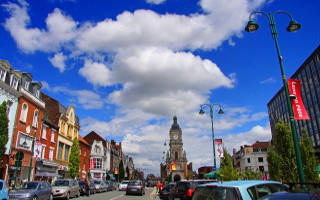

Bourbourg
Nord

Ville française du département du Nord dans la région des Hauts de France, Bourbourg compte 7112 habitants appelés les Bourbourgeois et les Bourbourgeoises
Marseille
Capitale

Stade vélodrome avec vue sur la ville

Rennes
Capitale
Rennes est la préfecture de la région Bretagne, au nord-ouest de la France. Elle est connue pour ses maisons médiévales à colombages et son immense cathédrale. Le parc du Thabor dispose d'une roseraie et d'une volière. Au sud de la Vilaine, le musée des Beaux-Arts expose des œuvres de Boticelli, Rubens et Picasso. Le centre culturel des Champs Libres abrite le musée de Bretagne et l'espace des Sciences, doté d'un planétarium.
Cracovie
Ex-capitale polonaise

Cracovie, ville du sud de la Pologne près de la frontièreavec la République tchèque, est connue pour son centre médiévalbien préservé et le quartier juif. Sa vieille ville - entourée par le parc Planty et les vestiges de l'enceinte médiévale de la ville - abrite en son centre la majestueuse Rynek Glówny (place du marché). Cette place est le site de la Halle aux draps, un avant-poste commercial à la Renaissance, et la basilique Sainte-Marie,une église gothique du XIVe siècle.
Lens
Nord pas de Calais

Lens est une ville de Pas de Calais, on peut y retrouver le Louvre Lens et plusieurs écoles tel que l'IUT de Lens ou se trouve le DUT MMI.
Baltimore
Plus grande ville du Maryland

Baltimore est une ville du nord-est des États-Unis située dans l'État du Maryland. Un des plus grands ports maritimes de la côte est, la ville abrite la prestigieuse université Johns-Hopkins et, dans sa banlieue, un campus de l'université du Maryland. Toutefois, un quart de sa population vit sous le seuil de pauvreté, ce qui la classe en 56e position des villes les plus pauvres des États-Unis. À noter que 11 % de la population était sans emploi en 2012.
Paris
Capitale

Voici Paris, la capitale de la France.
Roubaix
Ville

Roubaix est une commune française située dans le département du Nord, en région Hauts-de-France.
Paris
Capitale

Insérez description...
Paris
Capitale
Insérez description...
Paris
Capitale
Insérez description...